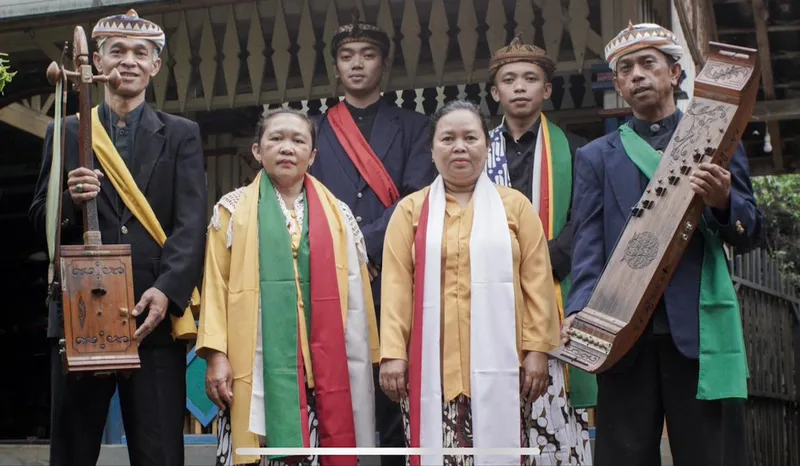
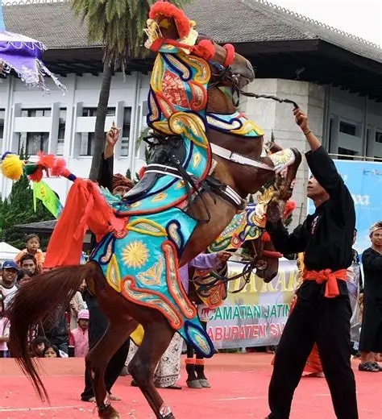
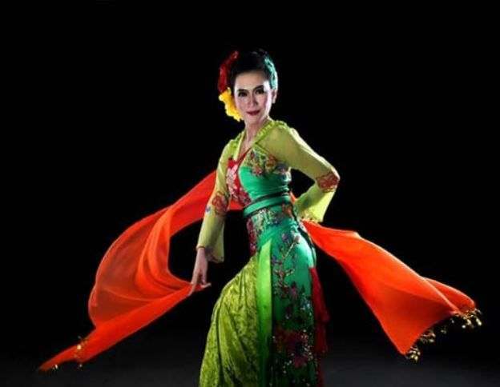
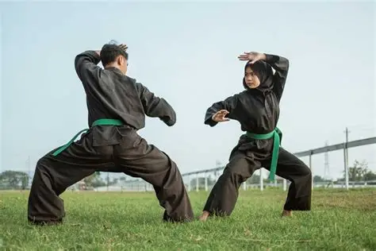
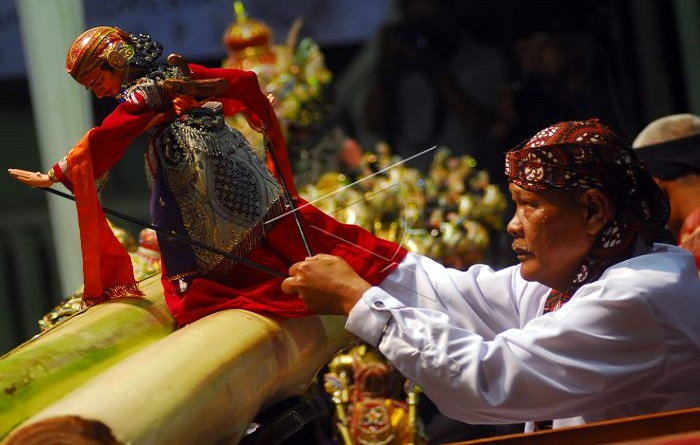

Seni Budaya Sumedang

Tarawangsa
Filosofi: Salah satu kesenian tertua di Sumedang yang bersifat sakral. Menggunakan alat musik gesek yang disebut tarawangsa dan kecapi, seni ini merupakan ungkapan rasa syukur masyarakat agraris kepada Sang Pencipta atas keberhasilan panen padi.

Kuda Renggong
Sejarah: Berasal dari kata "renggong" yang berarti keterampilan. Kuda dilatih untuk menari mengikuti irama musik. Kesenian ini sangat populer sebagai simbol kegembiraan dalam acara khitanan atau penyambutan tamu kehormatan di Sumedang.

Jaipong
Deskripsi: Tarian khas Jawa Barat yang enerjik dan dinamis. Di Sumedang, Jaipong sering ditampilkan dengan gerak yang lincah, ekspresif, dan berani. Perpaduan antara ketukan kendang yang dominan membuat tarian ini sangat memikat penonton.

Pencak Silat
Sejarah: Bukan sekadar seni bela diri, Pencak Silat di Sumedang sarat akan nilai spiritual dan disiplin. Menggabungkan unsur seni gerak (tari) dan bela diri untuk pertahanan diri serta menjaga keseimbangan antara fisik dan mental.

Wayang Golek
Deskripsi: Pertunjukan boneka kayu yang dipimpin oleh seorang dalang. Di Sumedang, cerita yang dibawakan sering kali disisipi dengan humor dan pesan moral yang relevan dengan kehidupan masyarakat saat ini, menjadikannya media komunikasi yang efektif.

Tari Umbul
Sejarah: Tari tradisional yang berasal dari Sumedang. Awalnya tarian ini merupakan bagian dari kegiatan spiritual namun kini berkembang menjadi seni pertunjukan. Dikenal dengan gerakan yang gemulai dan kostum yang khas, mencerminkan estetika kebudayaan Sunda yang luhur.